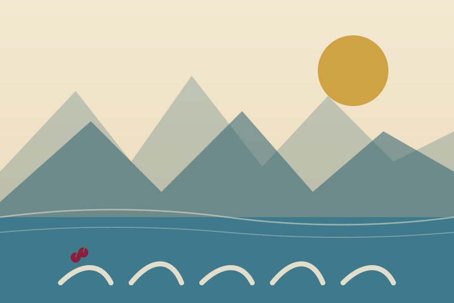
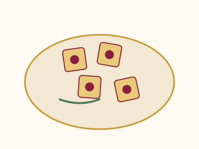
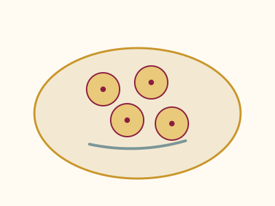

Harina seleccionada
Trabajamos con trigo de productores patagónicos, molido fino para lograr una masa elástica y pareja.
Fábrica artesanal desde 2011
En Los Antiguos combinamos la receta italiana de la familia con la cereza patagónica: el resultado son pastas frescas que no vas a encontrar en ningún otro lado de la Patagonia.

De la chacra a tu mesa
Trabajamos con trigo de productores patagónicos, molido fino para lograr una masa elástica y pareja.
Cada bollo se amasa y estira de forma artesanal, en tandas chicas, todos los días de la semana.
En temporada, usamos la cereza de las chacras de Los Antiguos para nuestros rellenos y salsas de autor.
Retirá en fábrica o pedí envío el mismo día en Los Antiguos y alrededores del Lago Buenos Aires.
Los preferidos de la casa

Nuestra receta insignia: masa fina rellena con cereza patagónica y queso de campo.
$6.200 / kg
Relleno de cordero patagónico braseado a fuego lento con hierbas de la zona.
$6.800 / kg
Agridulce y con cuerpo, pensada para acompañar rellenas y carnes de caza menor.
$3.100 / frascoLo que dicen los vecinos
"Los ravioles de cereza son un clásico de cada Fiesta de la Cereza en casa. No hay Semana Santa sin pasta de Pastas del Lago."
Marisa Cárdenas
Vecina de Los Antiguos
"Pedimos sorrentinos de cordero para el hospedaje todas las semanas. Los huéspedes siempre preguntan la receta."
Hostería El Mirador del Lago
Cliente mayorista
"Se nota la diferencia de una pasta amasada a mano. Nosotros ya no compramos pastas secas de supermercado."
Familia Huenul
Clientes desde 2015